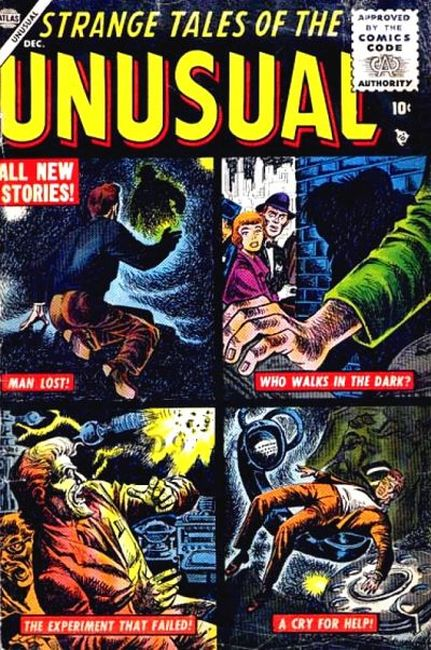
Series: 11 issues 1955
Publisher: Atlas
×
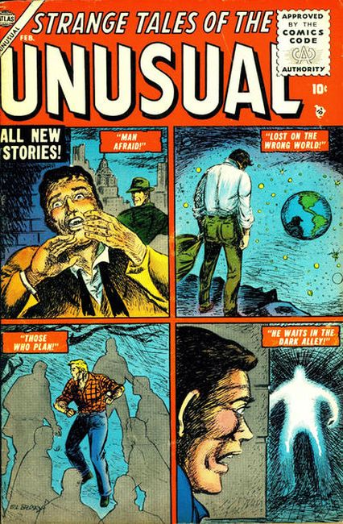
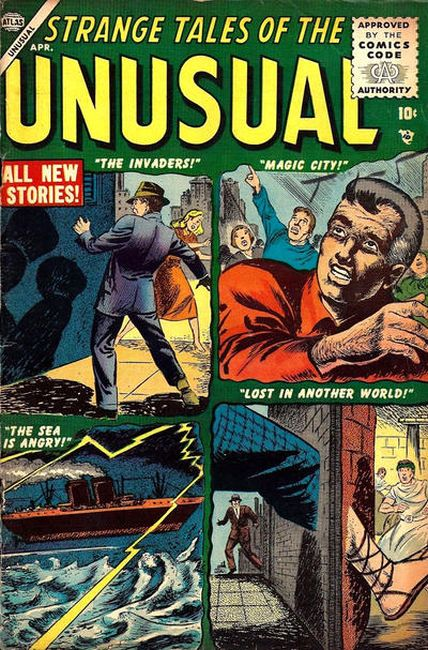
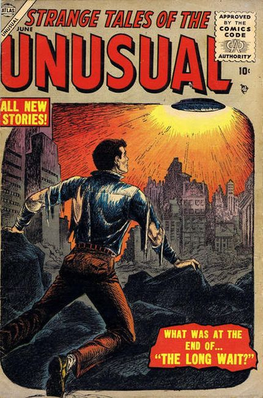
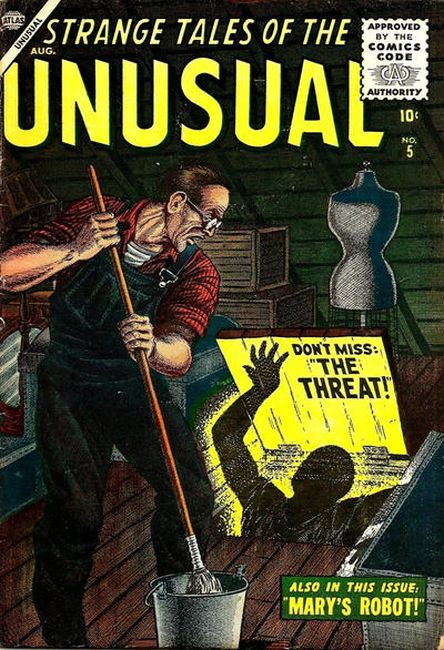
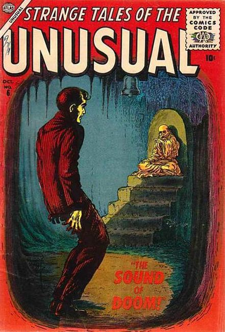
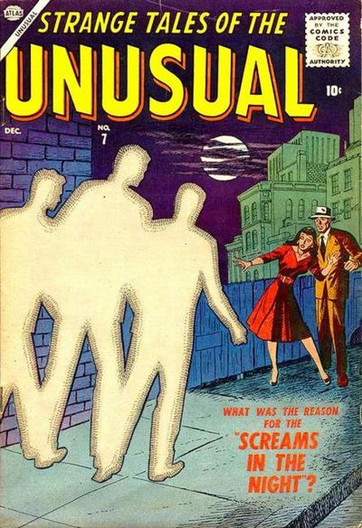
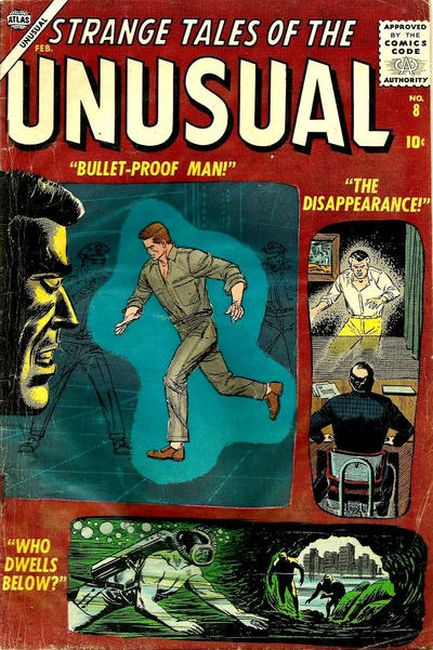
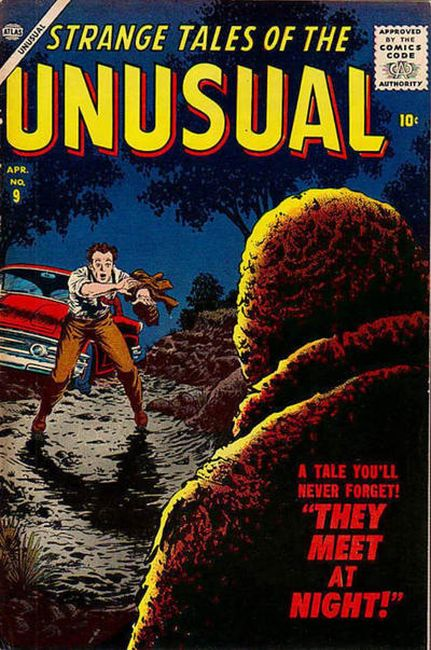
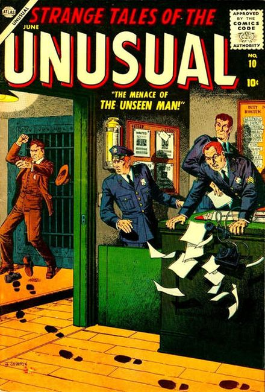
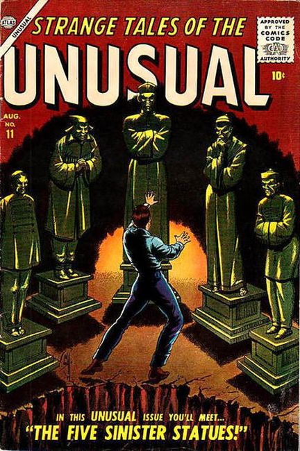
❮
❯
Horror anthology series. This series was one of eight SF anthologies launched or revived in an eight-month period (cover dates October 1955–June 1956), increasing Atlas's SF line from eight to sixteen books. This book ran until the collapse of Atlas's distributor and the subsequent restructuring known as the "Atlas Implosion".
Issue #1
- Cover by Joe Maneely
- Man Lost! (Illustrated by Bob Brown) A scientist who has invented a time machine has an unscrupulous brother who plans to use it for his own profit.
- The Sorcerer (Illustrated by Joe Maneely)
- Who Walks in the Dark? (Illustrated by John Romita Sr.)
- The Gift (Illustrated by Bob Powell)
- Cry for Help! (Illustrated by Robert McCarty)
- The Experiment That Failed (Illustrated by Don Heck)